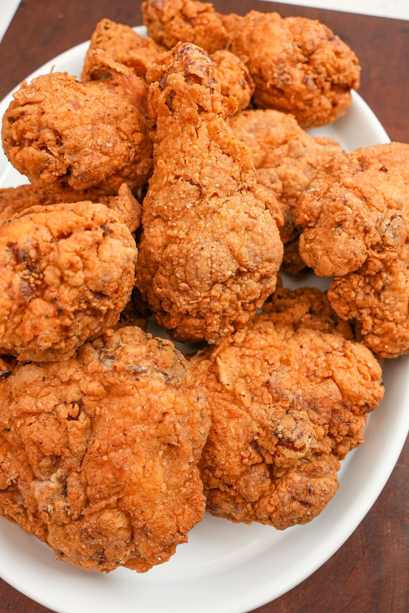

Home
Fried Chicken

Ingredients
- 2 lbs chicken pieces (thighs, drumsticks, breasts)
- 1 cup all-purpose flour
- 1 tablespoon paprika
- 1 tablespoon garlic powder
- 1 tablespoon onion powder
- 1 teaspoon cayenne pepper
- Salt and black pepper to taste
- 2 eggs
- 1/4 cup buttermilk
- Oil for frying (vegetable or peanut oil)
Steps
- Pat the chicken pieces dry with paper towels to remove excess moisture.
- In a shallow bowl, whisk together the eggs and buttermilk to create an egg wash.
- In another shallow bowl, combine the flour, paprika, garlic powder, onion powder, cayenne pepper, salt, and black pepper.
- Dip each chicken piece into the egg wash, making sure it's well coated on all sides.
- Transfer the chicken to the flour mixture and coat thoroughly, pressing gently so the seasoning adheres well.
- Heat oil in a deep skillet or Dutch oven to 325-350°F (163-177°C). Use a thermometer to ensure proper temperature.
- Carefully place the chicken pieces into the hot oil, working in batches if necessary to avoid overcrowding the pan.
- Fry for 12-15 minutes, turning occasionally, until the chicken is golden brown and the internal temperature reaches 165°F (74°C).
- Remove the chicken with tongs and place on a paper towel-lined plate to drain excess oil.
- Let cool for a few minutes, then serve hot with your favorite sides like mashed potatoes, coleslaw, or biscuits.